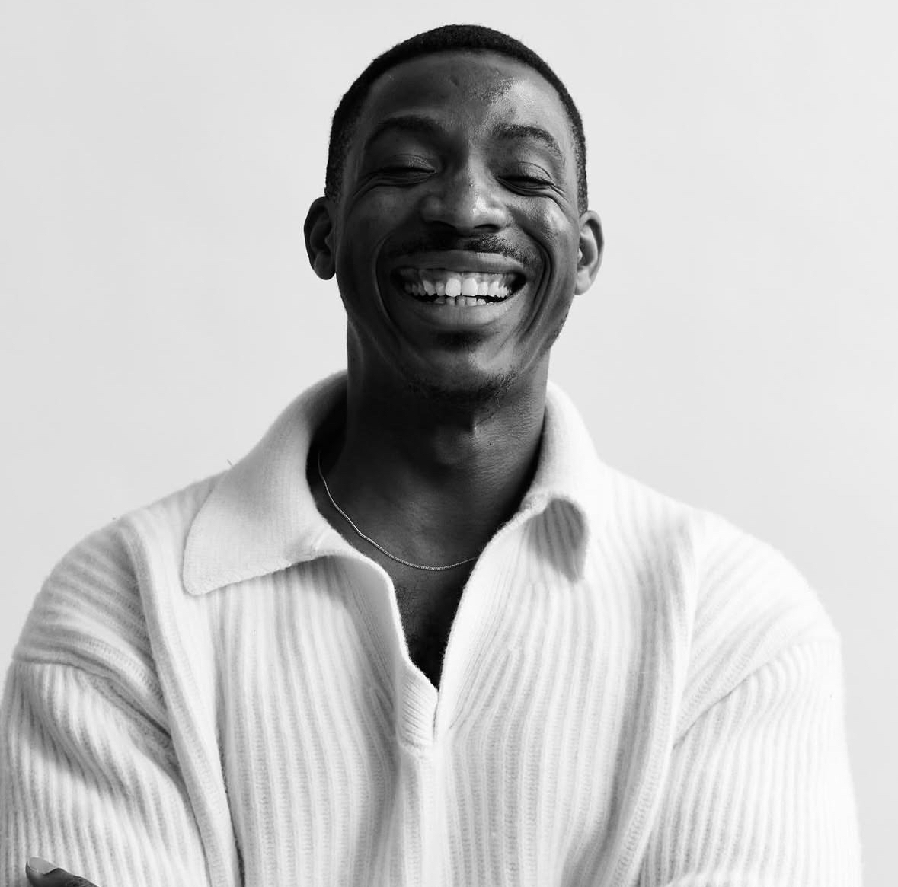
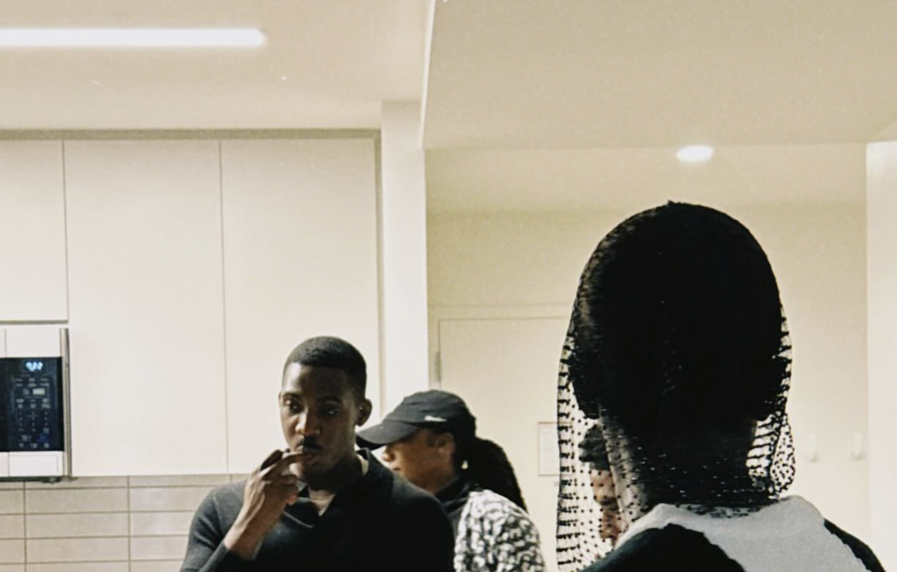
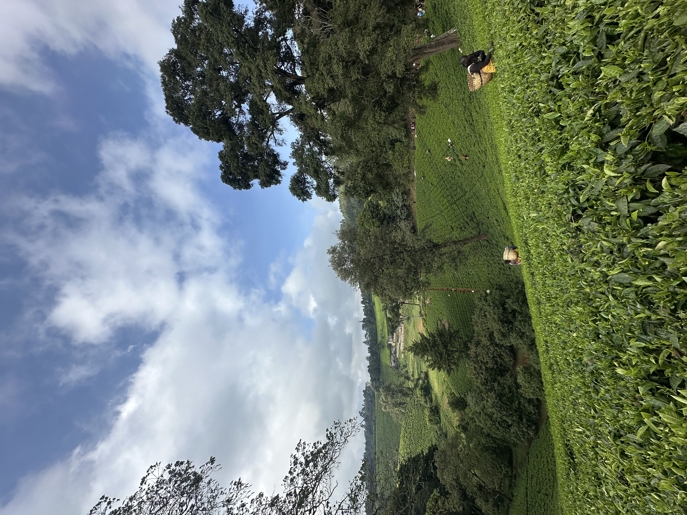
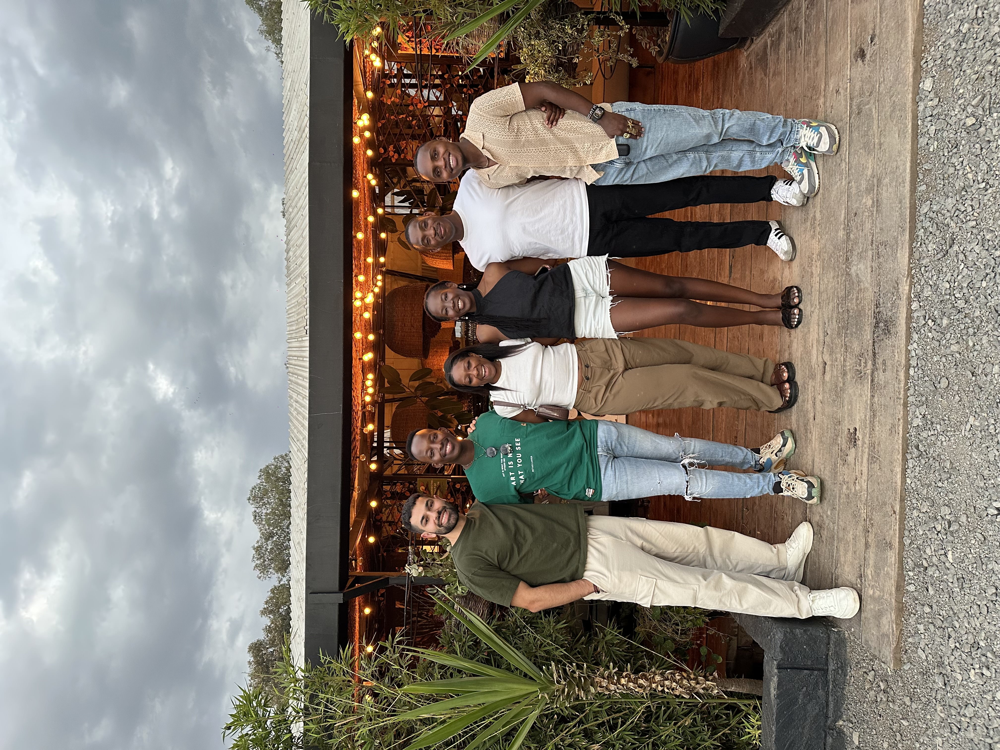
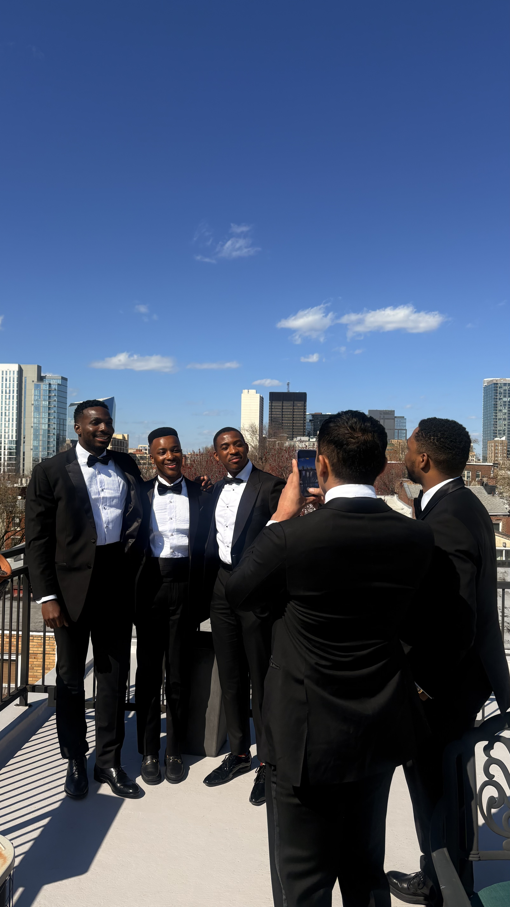
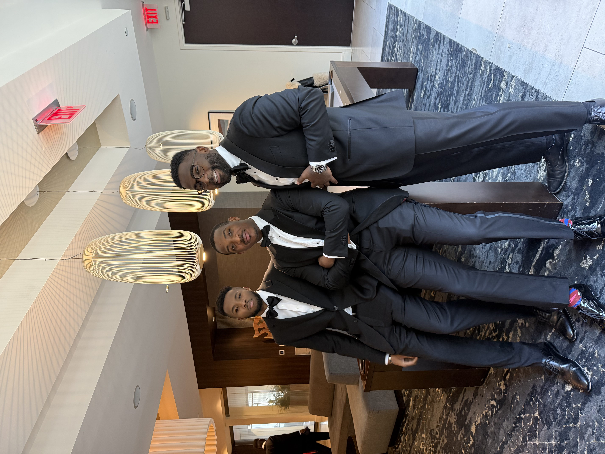
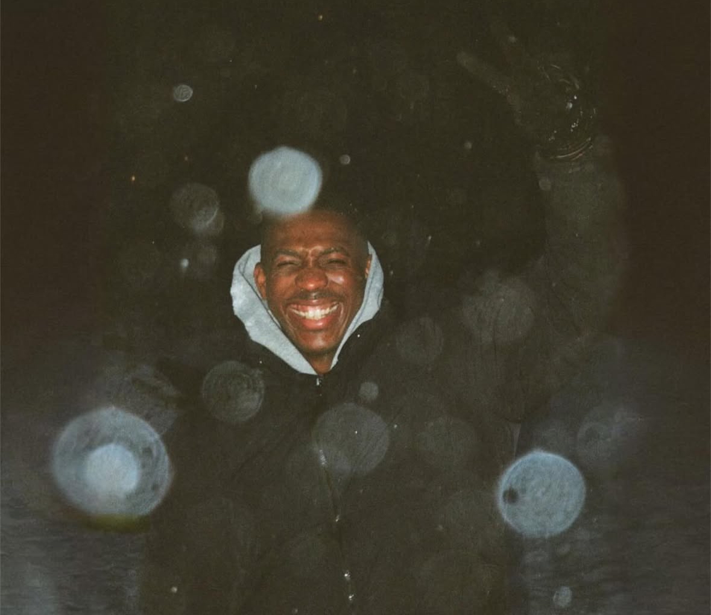

AI Systems Architecture · Private Capital · Africa & U.S.
Lapo to most people
Wharton MBA · Kinage · KOVA · Amazon · Capital One · TD Bank · City Ventures

Philadelphia, 2025
I grew up between two worlds: Lagos hustle and Bradford quiet. I have spent the years since crossing every border I could find. 36 countries and counting. The through-line is the same question everywhere I go: how does this actually work, and where does it break?
That question led me from chemical engineering to product management to AI systems to private capital. None of it was planned. All of it makes sense in hindsight.
I believe most AI systems fail in regulated institutions not because the models are weak, but because the escalation logic is naive.
Off the clock: I have been to 36 countries and counting, I speak Yoruba and English natively and enough French to embarrass myself, and I will absolutely debate you on jollof rice. I founded Young Africans in Diaspora because the gap was obvious and nobody else was filling it. That is usually why I build things.
I grew up watching how money actually moves when formal systems stall. Fuel shortages, FX swings, infrastructure gaps, nothing abstract.
I saw what happens when one upstream failure ripples outward. That was my first education in second-order effects.
Northern England. 8am chemical engineering lectures. Full scholarship. Heavy accent.
Learning to belong in rooms that did not expect me. Bradford taught me rigor. Lagos taught me instinct. That combination shaped everything that came after.
I was 21, running financial models inside a refinery while engineers twice my age argued about throughput.
Nobody told me that watching a plant bottleneck cascade into a quarterly write-off was an education in systems thinking. I figured that out later. At the time I just knew something was wrong before the numbers confirmed it.
West African fintech in motion. Cross-border capital that did not behave like the spreadsheets said it would.
I started mapping how informal lending systems coexist with formal banking. Regulation rarely matches how people actually transact.
0-to-1 product launch with a Fortune 10 partner. Real revenue. Real deadlines.
I learned that commercialization is its own discipline. A product can be technically excellent and still fail if positioning is wrong.
Columbia on a full merit scholarship. Then Capital One, then TD Bank, building ML systems inside institutions that move real money under regulatory consequence.
The hardest part of deploying AI in a bank is not the model. It is convincing the institution that the model can be wrong, and still be trusted.
Immersed in East African VC and private equity. Currency risk was not theoretical here.
I evaluated fintech and infrastructure models where regulatory variance and FX volatility could undo otherwise strong fundamentals.
Everything converged here. Investing in African markets by day, building AI governance systems in the evening, running a $6M student organisation on the side.
I am not trying to pick a lane. The operator who can allocate capital and understand the model it runs on is a different kind of useful.
Click a card to expand · Drag to explore →

East Africa · the long viewEnterprise AI compliance platform deployed inside a regulated financial institution. Built retrieval and classification workflows that improved issue resolution by 41% and cut cost-to-serve by 62%. Established evaluation systems for precision, drift, and escalation thresholds in production. Managing 14 contract staff across engineering, data, and operations.
RAG system built to know when not to answer. Evaluation framework tracks hallucination rate, topic drift, and answer precision over time. Because in a regulated institution, a confident wrong answer is worse than a careful silence.
Lifecycle product strategy for a 1.17M+ user subscription business inside an $8.4B initiative. Identified $148M revenue opportunity through early churn analysis and behavioral segmentation. Defined the ML-driven targeting roadmap to close the gap and designed human-escalation thresholds across the system.
Led a 13-person team across product, data engineering, and platform operations. Influenced $500M+ in platform investment decisions. Delivered AI-driven anomaly detection reducing investigation time by 29% and reconciliation cycles by 25% across a $400B institution. Launched self-service APIs adopted across 15 business units.
Owned product strategy for a $270M enterprise data platform serving 200+ internal teams. Drove 15% adoption growth through improved self-service access and onboarding. Delivered $80M+ in measurable value through platform capability expansion and accelerated feature delivery.
Owned product direction and full delivery for a $14M engagement with a Fortune 10 client. Translated complex, ambiguous enterprise requirements into a clean executable roadmap. Platform generated $15M in revenue within three months of launch.
Full investment lifecycle: market sizing, financial diligence, deal leadership, post-investment monitoring. 60+ companies reviewed. Two closed investments (mid-to-high seven figures). Built the firm's framework for markets where the standard U.S. playbook doesn't apply, FX stress, regulatory disruption, exit uncertainty across Nigeria, Kenya, South Africa, Ghana, and Egypt.
Building a credit data platform that converts informal financial behavior (savings groups, rent, school fees) into structured, usable credit signals for Nigeria's informal economy. Designed the onboarding model leveraging existing collector networks to drive adoption at grassroots scale. Operating across a 5-person cross-functional team.
I did not grow up reading textbooks about market failures. I grew up watching them happen in real time. Fuel queues that stretched for blocks because one upstream decision broke quietly. FX swings that wiped out savings overnight. Infrastructure that worked in spite of itself.
That is the city that taught me to ask: where does this break? Before I had the vocabulary for it, Lagos was my first education in second-order effects. Everything I have built since has been shaped by that question.
Why informal financial systems in West Africa are more sophisticated than they look from the outside, and why formalizing them badly is worse than leaving them alone.
Whether AI governance in regulated institutions is a product problem or a political one. Probably both.
How to build things that outlast the person who built them. Not immortality. Just durability.
What it actually means to be a builder from the continent operating inside Western institutions without losing the thread back home.
Nigerian jollof is better. This is not a debate, it is a fact with citations.
Most AI failures in enterprises are communication failures dressed up as technical ones.
The best investors in African markets are the ones who have been embarrassed by their first deal. Overconfidence is the most expensive mistake you can make in a market you do not actually understand yet.
Anyone who has never left their home country should not be building products for people who have.
I will talk to anyone at a party. I will remember their name, what they said, and follow up three weeks later. That is not strategy. That is just how I am wired.
I co-founded Young Africans in Diaspora because the community needed to exist and nobody was building it. I run Sunday conversations about AI, capital, and what it means to build from Africa. I think the most interesting problems live at the intersection of things that do not usually talk to each other.
I am fluent in English and Yoruba, conversational in French, and working on my Swahili for reasons that will make sense eventually.
36 countries visited. 3 languages, one of them barely. 2 engineering degrees, 0 engineering jobs. 1 Yoruba name most people get wrong.
Nigerian jollof is better. This is not negotiable and I will not be taking questions.
Finishing Wharton MBA. Kinage is live. KOVA is raising. Looking for the next hard problem. Writing about what happens when models meet institutions.
Life is nonlinear. Lean into it.
◆ Full CV
AI systems, private markets, leadership, publications, consolidated into one document. Last updated April 2026.
Peer-reviewed research on AI-assisted electrochemical optimization for hydrogen production from seawater. At the intersection of my engineering and ML backgrounds.
Reinvention is not a phase. It is the only stable strategy in an unstable life.
Capitalism does not just shape markets. It quietly rewrites how we form and measure relationships.
Burnout is not just overwork. It is what happens when constant change becomes your baseline.
Gratitude and homesickness are not opposites. They compound.
Drag to explore · Powered by Goodreads

Nairobi · 2025
New York · 2024
Philadelphia · 2025
◆ Philadelphia, 2025
That is the through-line in everything I build.
If you are building or investing in infrastructure, systems, or emerging markets, or thinking seriously about how technology reshapes them, I would like to hear from you.